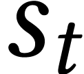
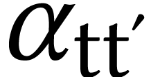
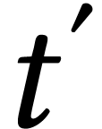
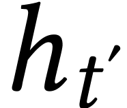
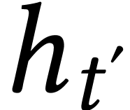
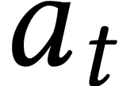

[main]Notes on Programming and Others
[main]Notes on Programming and Others
[main]Notes on Programming and Others
This article discusses the attention mechanisms both as an improvement to the encoder-decoder RNN models, and as a fundamental component to the Transformer architecture. It serves as a record of my learning process and a reference for the future use.
Sections:
Transformers
Machine translation can be viewed as constructing conditional language models that generate the most probable output in a target language for a given input in the other source language. To express this in a mathematical way:

Here, x and y denote the input and output sequence respectively, while
superscripts in angle brackets ( )
indicate the position of each word within the sequence. Traditionally, a
method called statistical machine translation (SMT) was
the dominant approach (as used in early versions of Google Translate).
NMT models are trained on large amount of parallel corpora,
and analyzes these corpora to identify statistical relationships between
words, phrases, and sentence structures in different languages.
)
indicate the position of each word within the sequence. Traditionally, a
method called statistical machine translation (SMT) was
the dominant approach (as used in early versions of Google Translate).
NMT models are trained on large amount of parallel corpora,
and analyzes these corpora to identify statistical relationships between
words, phrases, and sentence structures in different languages.
During the 2010s, another method called neural machine translation (NMT) rapidly gained popularity following the successful application of RNN models to translation tasks. A 2014 paper demonstrated how long-short-term memory (LSTM) cells could be employed to address sequence-to-sequence problems. The idea is to use an encoder LSTM to read the input sequence, generating a fixed-dimensional vector representation, which was then decoded by a second LSTM to produce the corresponding output sequence.
To better understand this neural network architecture, we will build an encoder–decoder network to solve a relatively simple task: converting human-readable date strings into the ISO date format. And here are some task samples:

The figure below describes our intended architecture:
The left-side LSTM is the encoder. To better capture information from the input sequences, we use a bidirectional RNN for this component. The encoder's hidden and cell states form the vector representation of input sequence, and they are then passed to the decoder as its initial state. The ISO-formatted dates are also used as inputs to the decoder during training, but shifted back by one step. In other words, during training the decoder is given as input the character that it should have output at the previous step, regardless of what it actually output. This is called teacher forcing—a technique that improves the model's performance. The decoder returns all cells' output sequences instead of states from the last cell. It then passes its output to a dense layer which uses softmax as the activation function, to get probabilities of each output character. We will now build this network step by step (the complete implementation can be found here).
First we need to prepare the training dataset. The faker is used here to generate some random dates, which are then formatted in random formats:
def load_date(): dt = fake.date_object() try: human_readable = format_date(dt, format=random.choice(FORMATS), locale='en_US') human_readable = human_readable.lower() human_readable = human_readable.replace(',','') machine_readable = dt.isoformat() except AttributeError as e: return None, None, None return human_readable, machine_readable, dt
The size of our training dataset is 100,000:
m = 100000 dataset = load_dataset(m) dataset[:5]
=>
[('saturday june 29 1996', '1996-06-29'), ('15 march 1978', '1978-03-15'), ('thursday december 28 2023', '2023-12-28'), ('wednesday december 31 1980', '1980-12-31'), ('apr 5 1995', '1995-04-05')]
The next step is to vectorize all the texts in the dataset. Since we are translating date strings, we will use character-level vectorization rather than word-level vectorization (as commonly used in NLP):
import tensorflow as tf vocab_size = 50 Tx = 30 Ty = 12 sos = '@' eos = '$' def custom_standardization(input_string): # Lowercase and remove punctuation except '-' lowercase = tf.strings.lower(input_string) # Remove all punctuation except '-' return tf.strings.regex_replace(lowercase, r"[^\w\s-@$]", "") dates_human = [d[0] for d in dataset] dates_machine = [d[1] for d in dataset] vec_layer_human = tf.keras.layers.TextVectorization( vocab_size, output_sequence_length=Tx, split="character", name="vec_h", standardize=custom_standardization) vec_layer_machine = tf.keras.layers.TextVectorization( vocab_size, output_sequence_length=Ty, split="character", name="vec_m", standardize=custom_standardization) vec_layer_human.adapt(dates_human) vec_layer_machine.adapt([f"{sos}{s}{eos}" for s in dates_machine]) print(vec_layer_human.get_vocabulary()[:15]) print(vec_layer_machine.get_vocabulary())
=>
['', '[UNK]', ' ', '1', '2', 'a', '0', '9', 'e', 'r', 'y', 'u', 'd', 's', 'n'] ['', '[UNK]', '-', '0', '1', '2', '@', '$', '9', '7', '8', '3', '4', '5', '6']
The empty string (“”) and
Next we split the whole dataset into training, validation and test sets:
train_size = 60000 valid_size = 20000 X_train = tf.constant(dates_human[:train_size]) X_valid = tf.constant(dates_human[train_size:train_size+valid_size]) X_test = tf.constant(dates_human[train_size+valid_size:]) X_train_dec = tf.constant([f"{sos}{s}" for s in dates_machine[:train_size]]) X_valid_dec = tf.constant( [f"{sos}{s}" for s in dates_machine[train_size:train_size+valid_size]]) X_test_dec = tf.constant([f"{sos}{s}" for s in dates_machine[train_size+valid_size:]]) Y_train = vec_layer_machine([f"{s}{eos}" for s in dates_machine[:train_size]]) Y_valid = vec_layer_machine( [f"{s}{eos}" for s in dates_machine[train_size:train_size+valid_size]]) Y_test = vec_layer_machine([f"{s}{eos}" for s in dates_machine[train_size+valid_size:]])
And we can construct our model now:
encoder_inputs = tf.keras.layers.Input(name="encoder_inputs", shape=[], dtype=tf.string) decoder_inputs = tf.keras.layers.Input(name="decoder_inputs",shape=[], dtype=tf.string) encoder_input_ids = tf.cast( tf.expand_dims(vec_layer_human(encoder_inputs), axis=-1), dtype=tf.float32) decoder_input_ids = tf.cast( tf.expand_dims(vec_layer_machine(decoder_inputs), axis=-1), dtype=tf.float32) encoder = tf.keras.layers.Bidirectional(tf.keras.layers.LSTM(256, return_state=True), name="encoder") encoder_outputs, *encoder_states = encoder(encoder_input_ids) encoder_states = [tf.concat(encoder_states[::2], axis=-1), # hidden states (0 & 2) tf.concat(encoder_states[1::2], axis=-1)] # cell states (1 & 3) decoder = tf.keras.layers.LSTM(512, name="decoder", return_sequences=True) decoder_outputs = decoder(decoder_input_ids, initial_state=encoder_states) output_layer = tf.keras.layers.Dense(vocab_size, name="dense", activation="softmax") Y_proba = output_layer(decoder_outputs) model = tf.keras.Model(inputs=[encoder_inputs, decoder_inputs], outputs=[Y_proba]) model.compile(loss="sparse_categorical_crossentropy", optimizer="nadam", metrics=["accuracy"])
We expand the dimensions of encoder_input_ids and decoder_input_ids because LSTM layers expect a input shape of (batch, timesteps, feature), but the outputs of our vectorization layers only have two dimensions. Another thing worth mentioning is how we compose the encoder_states. Since we use a bidirectional LSTM as the encoder, we get four states from it in total. The first two are hidden and cell states of the forward LSTM, and the last two are the corresponding states from the backward one. The hidden states are concatenated together, and the cell states are concatenated likewise, before being passed to the decoder. We can have a look at the model summary now:
model.summary(line_length=120, expand_nested=True)
=>
Model: "model" ________________________________________________________________________________________________________________________ Layer (type) Output Shape Param # Connected to ======================================================================================================================== encoder_inputs (InputLayer) [(None,)] 0 [] vec_h (TextVectorization) (None, 30) 0 ['encoder_inputs[0][0]'] decoder_inputs (InputLayer) [(None,)] 0 [] tf.expand_dims_2 (TFOpLambda) (None, 30, 1) 0 ['vec_h[1][0]'] vec_m (TextVectorization) (None, 12) 0 ['decoder_inputs[0][0]'] tf.cast (TFOpLambda) (None, 30, 1) 0 ['tf.expand_dims_2[0][0]'] tf.expand_dims_3 (TFOpLambda) (None, 12, 1) 0 ['vec_m[1][0]'] encoder (Bidirectional) [(None, 512), 528384 ['tf.cast[0][0]'] (None, 256), (None, 256), (None, 256), (None, 256)] tf.cast_1 (TFOpLambda) (None, 12, 1) 0 ['tf.expand_dims_3[0][0]'] tf.concat (TFOpLambda) (None, 512) 0 ['encoder[0][1]', 'encoder[0][3]'] tf.concat_1 (TFOpLambda) (None, 512) 0 ['encoder[0][2]', 'encoder[0][4]'] decoder (LSTM) (None, 12, 512) 1052672 ['tf.cast_1[0][0]', 'tf.concat[0][0]', 'tf.concat_1[0][0]'] dense (Dense) (None, 12, 50) 25650 ['decoder[0][0]'] ======================================================================================================================== Total params: 1606706 (6.13 MB) Trainable params: 1606706 (6.13 MB) Non-trainable params: 0 (0.00 Byte)
It indeed has the same topology as we showed earlier in figure 1. The training process tasks around 2 minutes on my RTX 3060 card, and the evaluation gets a promising result:
model.fit((X_train, X_train_dec), Y_train, epochs=10, validation_data=((X_valid, X_valid_dec), Y_valid)) print("Evaluate on test data") results = model.evaluate((X_test, X_test_dec), Y_test) print("test loss, test acc:", results)
=>
test loss, test acc: [0.0018235821044072509, 0.9993454813957214]
We can use our model to convert date formats finally, but it's not as
simple as calling
import numpy as np def translate(hunman_date): translation = "" for t in range(Ty): X = np.array([hunman_date]) # encoder input X_dec = np.array([sos + translation]) # decoder input y_proba = model.predict((X, X_dec), verbose=0)[0, t] # last token's probas char_id = np.argmax(y_proba) predicted_char = vec_layer_machine.get_vocabulary()[char_id] if predicted_char == eos: break translation += predicted_char return translation.strip()
We call the model in a loop because the decoder expects as input the character that was predicted at the previous time step. Let's see how our model performs:
for i in range(5): human_date= format_date(fake.date_object(),format=random.choice(FORMATS),locale='en_US') print("human: " + human_date) print("machine: " + translate(human_date) + "\n")
=>
human: Friday, December 20, 2019 machine: 2019-12-20 human: 14.02.73 machine: 1973-02-14 human: Jan 10, 2025 machine: 2025-01-10 human: Friday, February 22, 1985 machine: 1985-02-22 human: Sunday, September 12, 1971 machine: 1971-09-12
Although this encoder-decoder network performs well on date translation tasks, it still has potential limitations when applied to more complex NLP domains. The encoder in this network is essentially compressing text into fixed-size mathematical representations, so intuitively, as input sentences become longer, the rate of information loss tends to increase, leading to less accurate translations. This limitation was the key issue that another influential 2014 paper sought to address.
The authors proposed an extension to the basic encoder-decoder model. The most distinguishing feature is that the new model doesn't attempt to encode the entire input text into a single fixed-length vector. Instead, it encodes the input into a sequence of vectors, and the decoder selectively chooses the most relevant ones based on the current word being generated. To get an intuition, take our date translation task as an example. When translating the date string of "Friday, December 20, 2019", if the decoder is currently generating the month part of "2019-12-20", it only needs to focus on December from the input, so the model assigns higher weights to the vector representation of December. This is what the attention mechanism means in the context of this new approach. Now let's delve into details of each part, and go through key mathematical expressions from the paper.
General Description
In the new model architecture, the probability equation for the output word at time step t is:
Here g is a non-linear activation function, and  is decoder's hidden state at t step, which is further computed by
 is previous step's hidden state, and is a context vector depending on the encoder's hidden
states. Please note that, unlike the basic encoder-decoder approach,
each target word is conditioned on a distinct context, which is computed
as a weighted sum of hidden states from the encoder:
is previous step's hidden state, and is a context vector depending on the encoder's hidden
states. Please note that, unlike the basic encoder-decoder approach,
each target word is conditioned on a distinct context, which is computed
as a weighted sum of hidden states from the encoder:
The weight  is computed by a softmax function:
where
The parameter e is called energy and is obtained by
training a small alignment model that scores how well the input at
position  aligns with the output at position
 .
.
The probability , or its associated energy  , reflects the importance of
encoder's hidden state  with respect to the
decoder's previous hidden state in determining
the next state and generating
, reflects the importance of
encoder's hidden state  with respect to the
decoder's previous hidden state in determining
the next state and generating  . Thus, information can be distributed
throughout the sequence of encoder hidden states and selectively
retrieved by the decoder. This is a brief graphical illustration from
the paper:
. Thus, information can be distributed
throughout the sequence of encoder hidden states and selectively
retrieved by the decoder. This is a brief graphical illustration from
the paper:
The plus sign in the middle represents the weighted-sum computation for the context vector. The bidirectional LSTM below and the forward LSTM above are the encoder and decoder respectively. Let's now go deeper into implementation details of this neural network.
The key part of this new model architecture is the attention computation, so let's implement it first:
from tensorflow.keras.layers import RepeatVector, Concatenate, Dense, Dot, Softmax repeator = RepeatVector(Tx) concatenator = Concatenate(axis=-1) densor1 = Dense(10, activation = "tanh") densor2 = Dense(1, activation = "relu") activator = Softmax(axis=1, name="attention_weights") dotor = Dot(axes = 1) def one_step_attention(h, s_prev): """ Arguments: h -- hidden state output of the Bi-LSTM, numpy-array of shape (m, Tx, n_h) s_prev -- previous hidden state of the (decoder) LSTM, numpy-array of shape (m, n_s) Returns: context -- context vector, input of the next (decoder) LSTM cell """ s_prev = repeator(s_prev) # (m, Tx, n_s) concat = concatenator([h, s_prev]) # (m, Tx, n_h + n_s) energies = densor2(densor1(concat)) # (m, Tx, 1) alphas = activator(energies) # (m, Tx, 1) context = dotor([alphas, h]) # (m, 1, n_h) return context
This function computes the attention context at decoder time step t. It takes two inputs: the complete sequence of encoder hidden states h and the decoder's previous hidden state s_prev.
The decoder state is repeated Tx times to match
the encoder sequence length, enabling computation of alignment scores
between and each encoder hidden state . We construct the alignment model
as a three-layer neural network: two dense layers followed by a softmax
activation layer.
The resulting attention weights (alphas) represent the probability distribution indicating how relevant each input word at position t' is for generating the current output word at position t. In essence, these weights quantify how much attention the decoder should pay to each encoder position when producing the current output token.
Finally, the attention weights are applied via dot product with the encoder hidden states to produce a context vector—a weighted combination of all encoder states that provides tailored information for generating each specific output word.
This is how our model looks like now:
from tensorflow.keras.layers import Input, Bidirectional, LSTM, Dense n_h = 64 n_s = 128 def build_model(): encoder_inputs = Input(name="encoder_inputs", shape=[], dtype=tf.string) encoder_input_ids = tf.cast( tf.expand_dims(vec_layer_human(encoder_inputs), axis=-1), dtype=tf.float32) encoder = Bidirectional(LSTM(n_h, return_sequences=True), name="encoder") encoder_outputs = encoder(encoder_input_ids) s0 = Input(shape=(n_s,), name='s0') c0 = Input(shape=(n_s,), name='c0') s = s0 c = c0 decoder_LSTM_cell = LSTM(n_s, name="decoder", return_state = True) output_layer = Dense(vocab_size, name="output", activation="softmax") outputs = [] for t in range(Ty): context = one_step_attention(encoder_outputs, s) _, s, c = decoder_LSTM_cell(inputs=context, initial_state=[s, c]) out = output_layer(s) outputs.append(out) # Stack outputs to create a single tensor of shape (batch_size, Ty, vocab_size) outputs = tf.stack(outputs, axis=1) model = tf.keras.Model(inputs=[encoder_inputs, s0, c0], outputs=outputs) model.compile(loss="sparse_categorical_crossentropy", optimizer="nadam", metrics=["accuracy"]) model.summary(line_length=120, expand_nested=True) return model
This model differs from the previous architecture in two key aspects:
Instead of returning only the final hidden state, the encoder now outputs the complete sequence of hidden states from all time steps. These outputs are essential parts for computing attention weights later.
The decoder now implements a manual recurrent structure rather than using a standard LSTM layer. At each time step, the decoder cell receives two inputs: the attention-weighted context vector (computed by the one_step_attention function) and the hidden/cell states from the previous time step. The cell then passes its updated hidden and cell states to the next time step. The outputs from all decoder time steps are collected and stacked to form the final model output.
The training and prediction procedures remain unchanged from the previous implementation. However, we add a new visualization function to analyze the learned attention patterns for test samples.:
import matplotlib.pyplot as plt def plot_attention_map(modelx, text): layer = modelx.get_layer('attention_weights') f = tf.keras.Model(modelx.inputs, [layer.get_output_at(t) for t in range(Ty)]) s = np.zeros((1, n_s)) c = np.zeros((1, n_s)) X = np.array([text]) attention_weights = f.predict([X, s, c]) attention_map = np.zeros((Ty, Tx)) for t in range(Ty): for t_prime in range(Tx): attention_map[t][t_prime] = attention_weights[t][0, t_prime, 0] # Normalize attention map row_max = attention_map.max(axis=1) attention_map = attention_map / row_max[:, None] prediction = modelx.predict([X, s, c], verbose=0) predicted_text = [] for i in range(len(prediction[0])): char_id = np.argmax(prediction[0, i]) predicted_char = vec_layer_machine.get_vocabulary()[char_id] predicted_text.append(predicted_char) text_ = list(text) input_length = len(text) output_length = Ty # Plot the attention_map plt.clf() f = plt.figure(figsize=(8, 8.5)) ax = f.add_subplot(1, 1, 1) # add image i = ax.imshow(attention_map, interpolation='nearest', cmap='Blues') # add colorbar cbaxes = f.add_axes([0.2, 0, 0.6, 0.03]) cbar = f.colorbar(i, cax=cbaxes, orientation='horizontal') cbar.ax.set_xlabel('Alpha value (Probability output of the "softmax")', labelpad=2) # add labels ax.set_yticks(range(output_length)) ax.set_yticklabels(predicted_text[:output_length]) ax.set_xticks(range(input_length)) ax.set_xticklabels(text_[:input_length], rotation=45) ax.set_xlabel('Input Sequence') ax.set_ylabel('Output Sequence') # add grid and legend ax.grid() return attention_map
We extract the attention_weights layer from the trained model and use it to obtain the attention weights during prediction. These weights are then visualized as heat maps, where each cell represents the attention score between a specific input position and output position. This visualization reveals which parts of the input sequence the model focuses on when generating each word in the output, providing interpretability into the model's decision-making process. Let's try it now:
plot_attention_map(model, "Monday, February 23, 1998")
=>
The complete code of this section can be found here.
The attention mechanism we've implemented is sometimes called additive attention (due to the concatenation of the encoder output with the decoder's previous hidden state) or Bahdanau-style attention (named after the 2014 paper's first author). Another common attention mechanism, known as dot-product attention or Luong-style attention, was proposed shortly after, in a 2015 paper.
Compared to Bahdanau-style attention, the key difference is that,
instead of using the decoder's hidden state from the previous time step
(t-1), Luong attention uses the decoder's current hidden state  at step t to: (a) compute the attention weights alongside
the encoder's hidden states, and (b) be combined with the resulting
context vector to produce an attentional hidden state
at step t to: (a) compute the attention weights alongside
the encoder's hidden states, and (b) be combined with the resulting
context vector to produce an attentional hidden state  . The attentional hidden state is then fed to
an activation layer for the final prediciton.
. The attentional hidden state is then fed to
an activation layer for the final prediciton.
The  in the figure denotes the attention weights
( in our previous example). These weights are
computed by applying a probability distribution to the attention scores
(or energies in our example), following the same process described
earlier:
in our previous example). These weights are
computed by applying a probability distribution to the attention scores
(or energies in our example), following the same process described
earlier:

But how these scores are computed is different. There are three alternative ways proposed in the paper:
The dot and general equations are two dot-product variants, and the third one is the same calculation used for Bahdanau-style attention. When the authors compared both dot-product approaches against the concatenative attention mechanism, they found that the dot-product variants achieved better performance. For this reason, dot-product attention is more popular nowadays.
Keras provides a Attention layer for dot-product attention, we can add it to the basic encoder-decoder network with some other slight modifications to implement the Luong-style attention.
We first need to also set return_sequences=True for the encoder:
encoder = tf.keras.layers.Bidirectional( tf.keras.layers.LSTM(256, return_sequences=True, return_state=True), name="encoder")
And then, we create the attention layer and pass it the decoder's states and the encoder's outputs. Lastly, we pass the attention layer's outputs directly to a activation layer, to get the final prediction:
attention_layer = tf.keras.layers.Attention() attention_outputs = attention_layer([decoder_outputs, encoder_outputs]) output_layer = tf.keras.layers.Dense(vocab_size, name="dense", activation="softmax") Y_proba = output_layer(attention_outputs)
We can map our code to the components in Figure 4. The decoder_outputs
and encoder_outputs correspond to  and respectively, tf.keras.layers.Attention()
implements the Attention layer, and attention_outputs
represents from the figure.
and respectively, tf.keras.layers.Attention()
implements the Attention layer, and attention_outputs
represents from the figure.

 ).
).